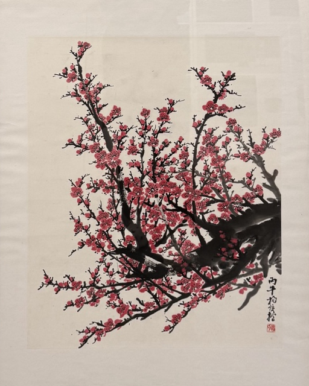

01 The artist
A life
in ink.
杨位榜
Weibang Yang
Shanwei, Guangdong, China
Weibang Yang is a Chinese ink painter based in Shanwei, Guangdong, China, where he serves as president of the Shanwei Chinese Painting Society (汕尾市中国画学会) and hosts exhibitions for local artists.
He has painted since childhood. Through careers as an art teacher and then in business, he never stopped working with the brush. After retiring, he returned to formal study at the Xi’an Academy of Fine Arts (西安美术学院), becoming the oldest student of the renowned ink master Wang Bao’an (王保安). Over two years of study, teacher and student traveled across China painting together, and his teacher has since visited Shanwei many times.
Today he paints full-time, every day. His work centers on landscape: mountains, forests and water, built from layered ink washes and decisive brushwork, often drawn from places he has sketched in person. Every piece is an original, painted entirely by hand.
This is the first public showing of his work in the United States.
02 The collection
On view.
Six original paintings.
Choose a work to look closer.
03 Inquiries
A work
speaks to you?
For availability, details, or a closer look,
get in touch.